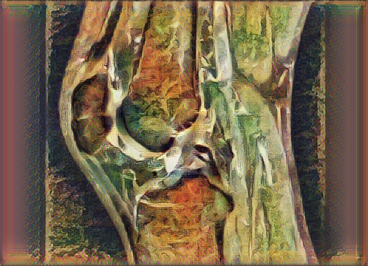

A New Story
It’s late winter. I still run in the dark, though I get traces of dawn now. Surfaces are ice, the wind blows viciously, and my miles get slower and slower. This is always a hard time of year to be a runner.
This year it’s harder than ever.
My right knee has been bothering me since last summer, after some particularly long and brutal trail runs, after 100 miles of backpacking, after . . . maybe something I don’t even recall. It started quiet and progressed to a yell walking up and down stairs by Thanksgiving. The results of my MRI are now in, and it’s tempting to hear them with dramatic music playing in the background:
Advanced Chondrosis, with cartilage fissuring and bone edema

The best translation I’ve got is that I’ve ruined my knee in a way that won’t heal.
The one clear message I’m getting from everyone - physicians, runners, bloggers, running doctor bloggers - is that I should all but stop running. This isn’t garden-variety arthritis; this is damage, and I should find a new sport with lower impact, to extend the life of my knee before a now-inevitable replacement. So, like several billion of my middle-aged brethren before me, I’ll have to adjust - try to make a go of it with cycling or rowing or quietly reading. But that hurts, because running, to me, is perfect. All you need is a pair of shoes, and you can do it anywhere in the world, in any conditions. I’m going to miss it like I’d miss home.
I’m in the dangerous position of being able to construct multiple narratives about my life as a runner. If I squint and tilt my head one way, I see a late-blooming enthusiasm that led me to start piling up miles and seriousness even before a pandemic made it the perfect manic coping strategy. If I tilt the other way, I read a story of a little fat kid who showed up to track practice one day; whose coach - Tim Simpson, bless you - didn’t laugh him off the field but instead got him moving; of someone who’s been running ever since. Both narratives are “correct”, but both are coming to an end.
Time to get to work on a new story.